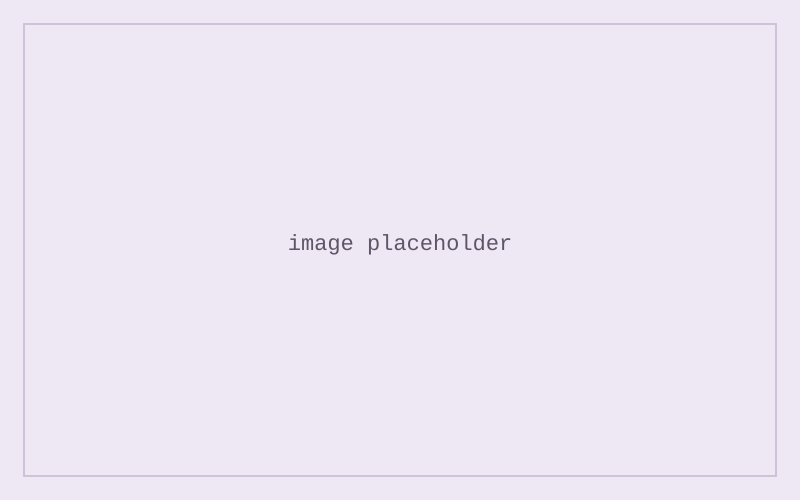

project
Example Project
A template page for titles, images, and a simple carousel.
Copy this file when you add a new project. Keep the title, subtitle, and sections you need; delete the rest.
Use a horizontal rule to split parts of a write-up the way a document would use a line break between topics.
Image

Image carousel
1 / 3